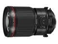

器材库 > 35mm画幅MF定焦镜头 > TS-E 135/4L Macro

详细规格
镜头类型
移轴镜头
发布日期
2017-08-31
焦距
135mm
最大光圈
f/4
最小光圈
f/45
视角（对角）
18°
镜头结构
11片/7组
低/超低色散镜片
2片
光圈叶片
9片
最近对焦距离
48.6cm
最大放大倍率
约0.5倍
滤镜口径
82mm
镜头卡口
Canon EF
防抖
否
颜色
黑色
尺寸
88.5×139.1mm
重量
1110g
该产品暂无存档的网友点评
产品图 / 样片
TS-E 135/4L Macro